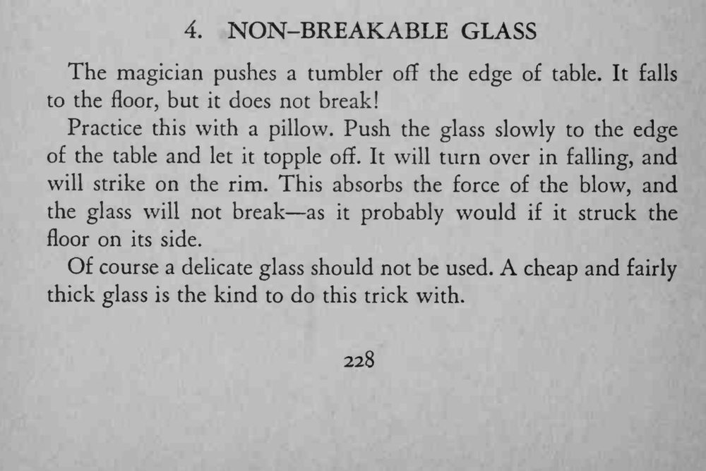

魔术师把一只玻璃杯推下桌沿，杯子翻落在地却完好无损。
一定要让杯子翻成杯口先着地，落地处垫枕头练习，薄杯不可用。

The magician pushes a tumbler off the edge of table. It falls to the floor, but it does not break! Practice this with a pillow. Push the glass slowly to the edge of the table and let it topple off. It will turn over in falling, and will strike on the rim. This absorbs the force of the blow, and the glass will not break as it probably would if it struck the floor on its side. Of course a delicate glass should not be used. A cheap and fairly thick glass is the kind to do this trick with.